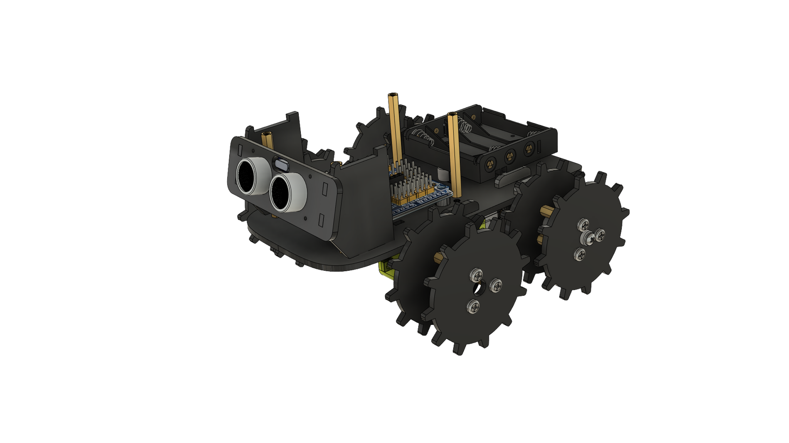
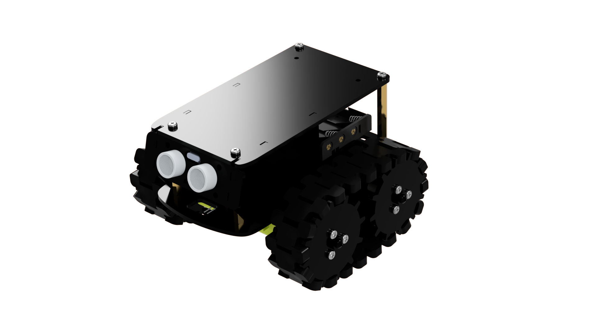
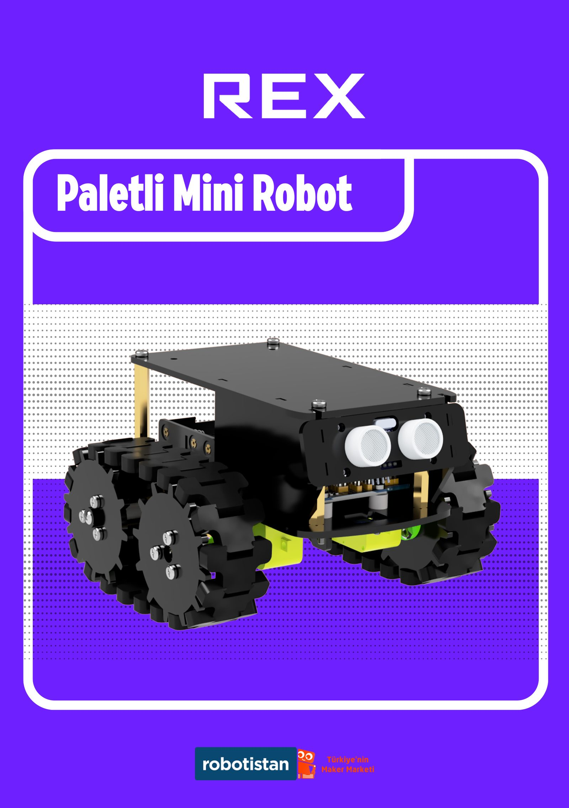

REX: Robotistan için Paletli Mini Robot Kiti
Robotistan bünyesindeki stajım sırasında tasarlanan, ultrasonik sensörlü ve Arduino tabanlı paletli bir mini robot kiti. Kendi montaj kılavuzuyla birlikte gerçek bir ürün olarak satışa sunuldu.
Eğitim robotik kitleri, montajda zorlanıyor
Arduino tabanlı eğitim robotik kitlerinde asıl zorluk çoğu zaman elektronik değil, kullanıcının parçaları doğru sırayla ve doğru yönde monte edebilmesi. Kit, hem donanım hem de montaj deneyimi olarak tasarlanması gereken bir ürün.
Mecanum tekerlek ve sensör yerleşimi
Hareket kabiliyeti için mecanum tekerlek sistemi tercih edildi. Ultrasonik mesafe sensörlerinin (HC-SR04) ön yerleşimi ve Arduino Nano shield'inin gövde içindeki konumu, kablolama ve erişilebilirlik gözetilerek araştırıldı.
Neyin doğru olduğuna nasıl karar verdik
| Kriter | Gereksinim |
|---|---|
| Montaj kolaylığı | Kullanıcı, elektronik deneyimi olmadan monte edebilmeli |
| Elektronik entegrasyonu | Arduino Nano, HC-05 Bluetooth ve HC-SR04 sensörler gövdeye sorunsuz oturmalı |
| Üretilebilirlik | Gövde lazer kesim akrilik parçalardan oluşmalı |
| Maliyet | Eğitim kiti fiyat aralığında kalmalı |
Standoff tabanlı katmanlı gövde
Gövde, birbirine pirinç standoff'larla bağlanan katmanlı akrilik plakalardan oluşacak şekilde kurgulandı. Bu yaklaşım hem üretimi basitleştirdi hem de kullanıcının montaj sırasında hangi parçanın nereye gittiğini görsel olarak takip etmesini kolaylaştırdı.
Erken CAD çalışması
İlk CAD modelleri, tekerlek yerleşimi ve gövde oranlarını netleştirmek için hızlıca birden fazla versiyon halinde geliştirildi.

Elektronik bileşenlerin gövdeye entegrasyonu
Arduino Nano shield, HC-05 Bluetooth modülü, iki adet HC-SR04 ultrasonik sensör, dişli DC motorlar ve pil tutucu, standoff yükseklikleri (12mm, 45mm gibi) ile katmanlar arasında belirli bir sırayla yerleştirilecek şekilde tanımlandı.
Montaj kılavuzu, tasarımın bir parçası
Ürünün en somut montaj-için-tasarım (DFA) kanıtı, adım adım hazırlanan görsel montaj kılavuzu. Her adım, hangi standoff'un hangi uzunlukta ve hangi delikte kullanılacağını (A1, A2, Y1-Y4 gibi etiketlerle) net şekilde gösteriyor.

Çok sayıda fiziksel revizyon
Dosya geçmişi, v2'den v4.2'ye kadar birden fazla fiziksel revizyonun üretildiğini gösteriyor. Her versiyon, önceki montajdan çıkan bir düzeltmeyi yansıtıyor.
v2'den v4.2 finale
Proje, tek bir versiyonla değil, art arda gelen düzeltmelerle olgunlaştı: v2, v3, v3.2, v3.3, v3.4, v3.5, v4, v4.1, ve son olarak v4.2. Bu sıralama, tekerlek montajı ve sensör yerleşiminde yapılan küçük ama kümülatif iyileştirmeleri yansıtıyor.
Sonuç

Render'da kalmayan bir ürün
REX, Robotistan markası altında gerçek bir ürün olarak satışa sunuldu, kendi kutusu ve montaj kılavuzuyla. Bu proje, tasarımın üretim ve kullanıcı deneyimiyle (montaj) birlikte düşünülmesi gerektiğinin somut bir örneği.
